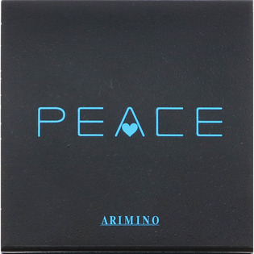
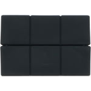

返回列表
产品名称：ピース プロデザインシリーズ フリーズキープワックス

アリミノ ピース プロデザインシリーズ フリーズキープワックス ４０ｇ
メーカー アリミノ
JANコード 4901275061818
商品の特徴
○強力なセット力
○立体的な束感
○black
- 成分・分量
- 水、キャンデリラロウ、シクロメチコン、コハク酸ジオクチル、オクタン酸セチル、マイクロクリスタリンワックス、ステアリン酸、セテス-20、PG、（ビニルピロリドン／VA）コポリマー、TEA、セテス-6、ステアリルアルコール、ビスPEG-18メチルエーテルジメチルシラン、テオブロマグランジフロルム種子脂、カルボマー、エタノール、EDTA-4Na、フェノキシエタノール、ブチルパラベン、メチルパラベン、香料、赤227、青1
- 用法及び用量
- ＜使用方法＞
スタイリングの仕上げとして、適量を手のひらでのばしてから必要なところにつけます。